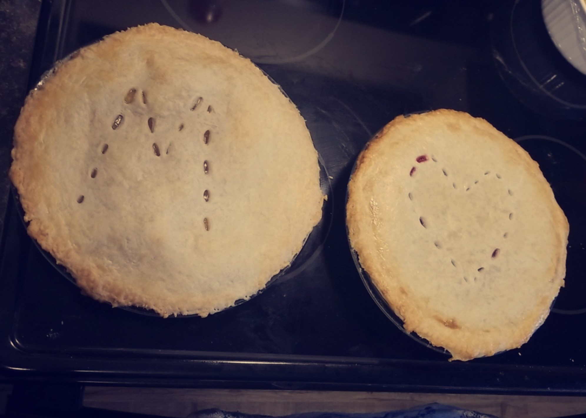
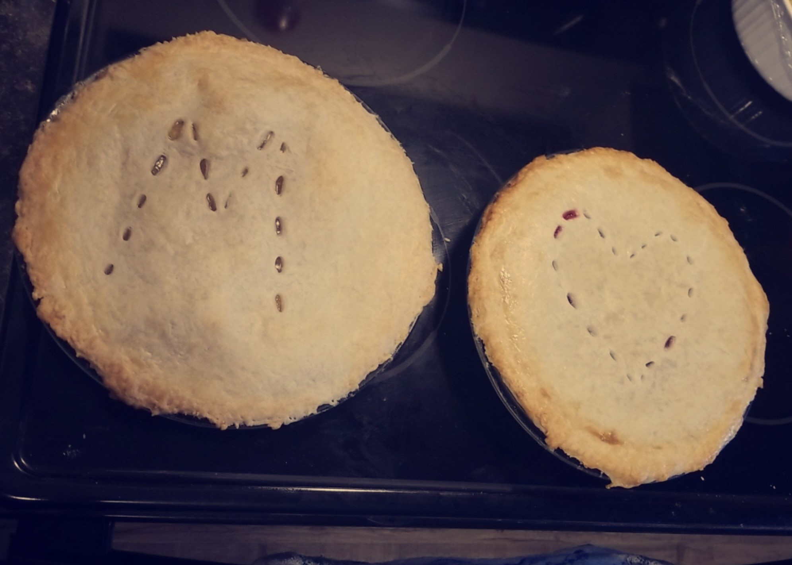

Mom's Best Spice Cake
- 3/4 cups - Butter
- 1 1/2 cups - Sugar
- 3 - Egg yolks, beated
- 1 tsp - Vanilla
- 1 cup - Milk
- 1/2 tsp - Salt
- 2 tsp - Baking Powder
- 1/2 tsp - All Spice
- 1/4 tsp - Cloves
- 1 tsp - Cinnamon
- 2 1/4 cups - Flour
- 1 cup - raisins
- 2/3 cups - chopped nuts
- 3 - Egg Whites
Cream butter, add sugar gradually, beating until fluffy
Add beaten egg yolks, vanilla, and milk, beat until smooth.
Stir salt, baking powder, spices, and flour together in a small bowl, add nuts and raisins.
Combine flour mixture into batter. Beat egg whites until stiff but not dry, fold gently into batter.
Grease and flour loaf pan, bake at 350 degrees for 50-60 minutes
 
